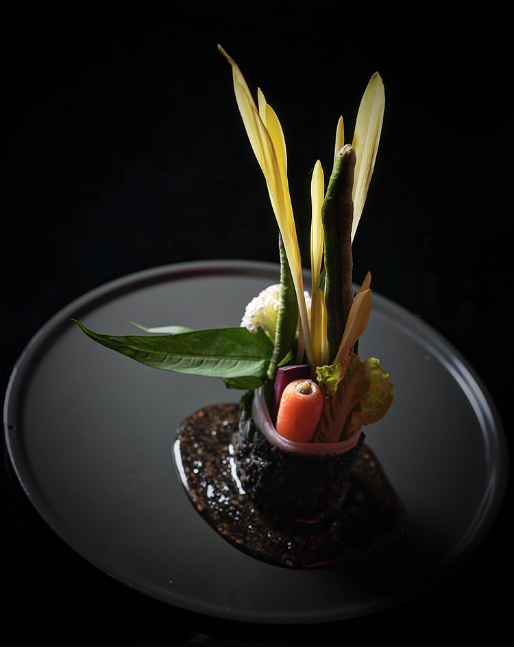
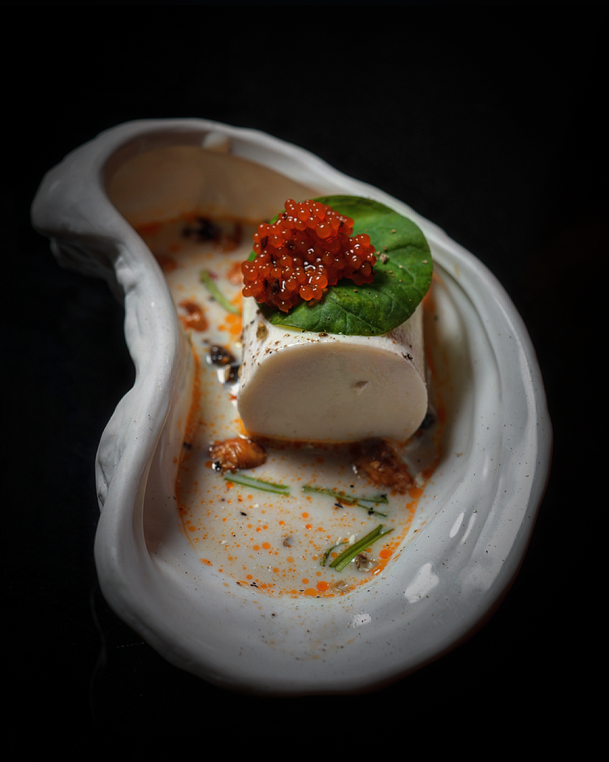
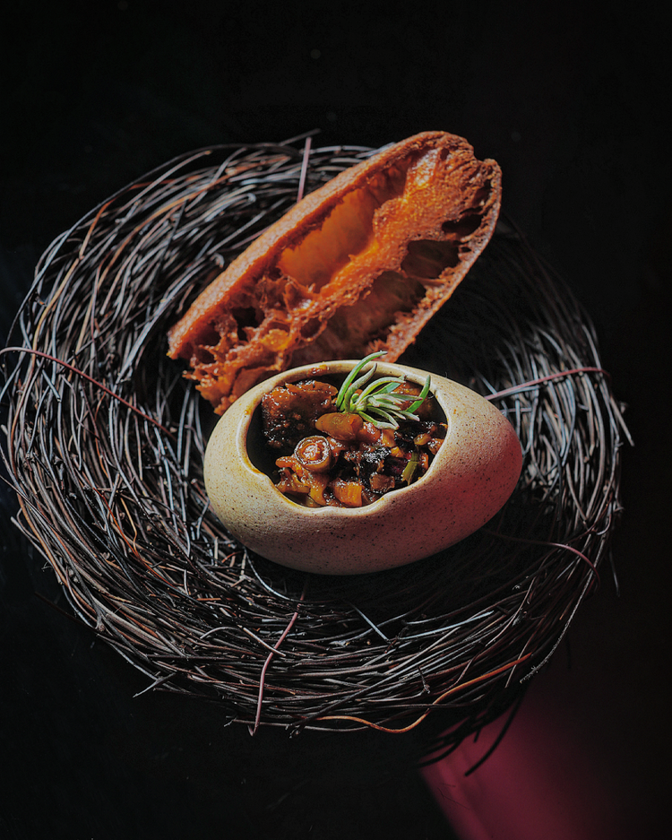
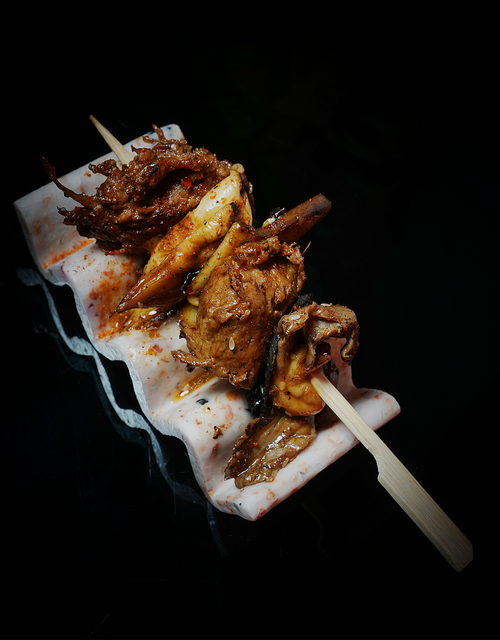
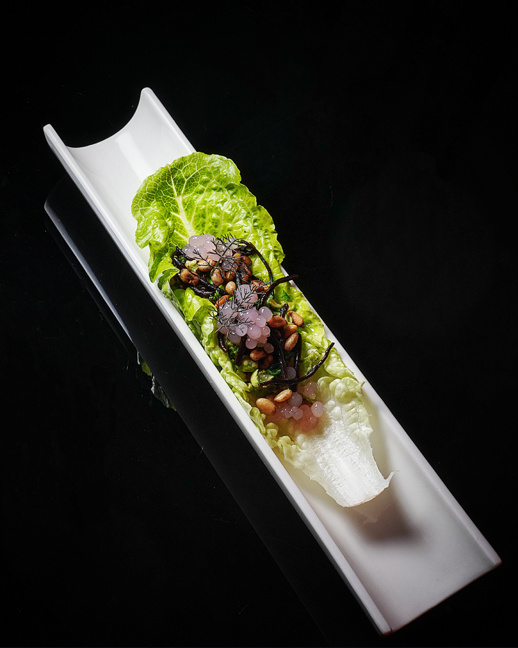
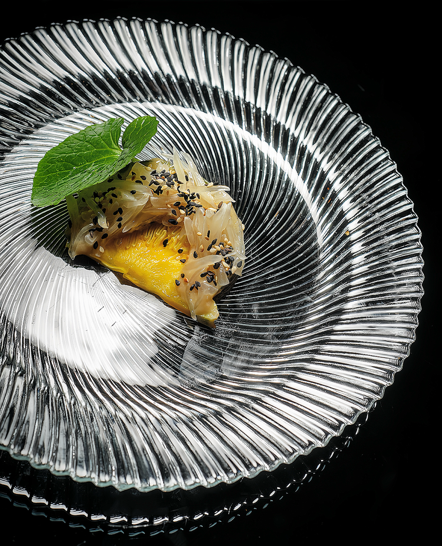
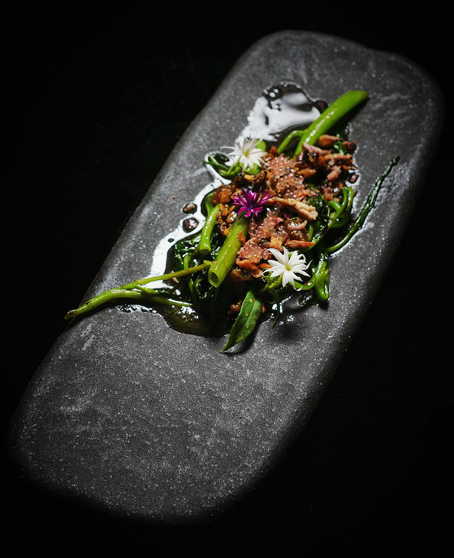
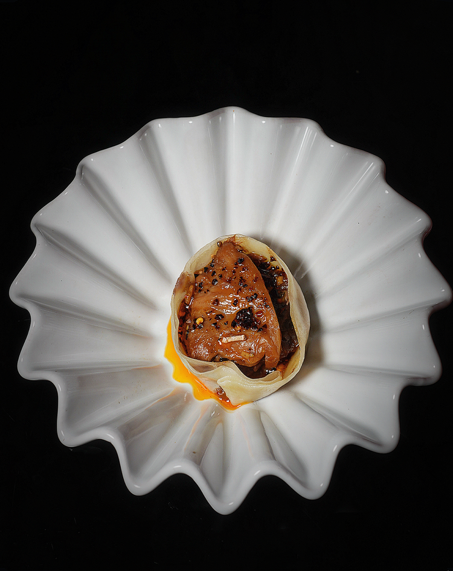
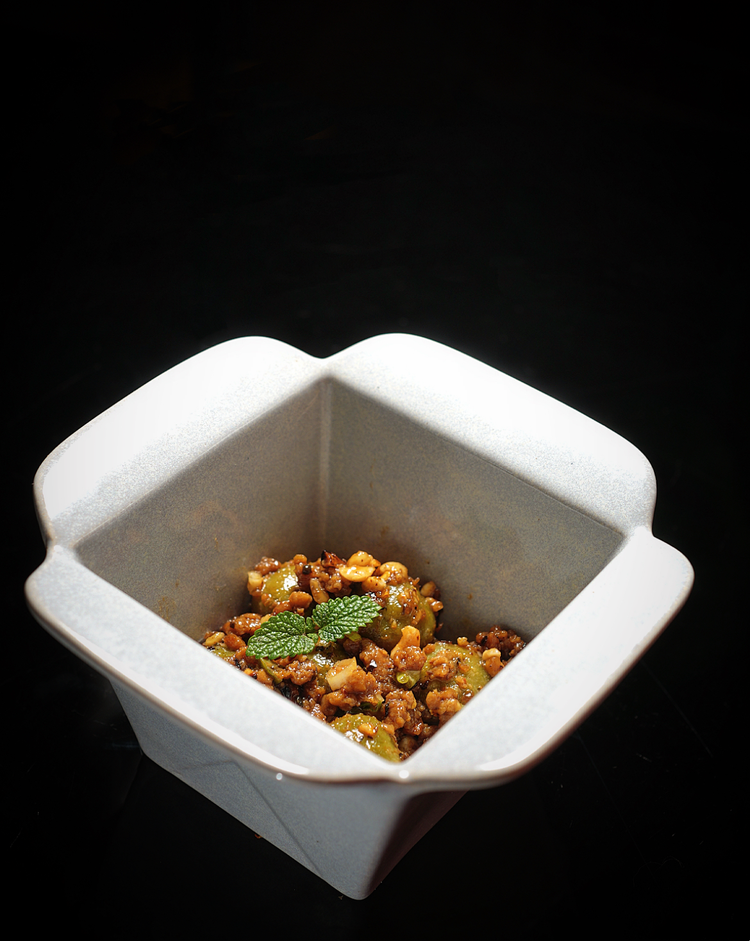
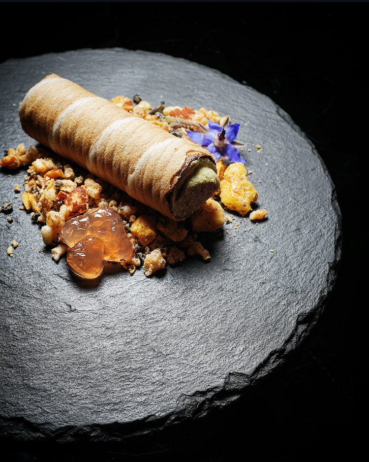

10 Course Vegan
Degustation
We pride ourselves on delivering one of Melbourne's most innovative plant-based Sichuan cuisine fine dining experiences at our contemporary Sichuan restaurant. Our 10 Course Vegan Degustation takes you on a carefully curated culinary journey that celebrates the vibrant, multi-layered flavours of traditional, authentic Sichuan cuisine, reimagined with seasonal produce, bold spices, and modern plant-based techniques that reflect the creativity of our evolving Sichuan cuisine menu. Each course is thoughtfully designed to balance taste, texture, and presentation, offering a progression that delights every sense. From light and refreshing starters to rich and savoury mains inspired by authentic Sichuan cuisine, and finishing with a refined plant-based dessert, we aim to create a memorable vegan tasting menu experience that appeals not only to dedicated vegans but also to curious diners and lovers of creative, elevated cuisine, exploring a modern plant-based Sichuan cuisine menu at a leading Sichuan restaurant in Melbourne.

Daikon pot plant, black tahini soil

Silken tofu, fermented soy beans, soy milk, finger lime & fish mint

Roasted eggplant in pickled ginger, snake beans & chilli bean paste, hand made Chinese donut

Wok grilled mushroom medley on skewer:Oyster, king oyster, wood car & shiitake meat

Stir fried plant mince, pineapple, Chinese celery & sour mango

Grandma's heirloom tomato, almond pesto green apple, crunchy peas & wasabi pearls

Kíohlrabi noodles, burnt chilli relish, miso mayo

Red braised Lion's Mane, creamy mash & golden garlic

Purple sweet potato. sweet black sesame & peanut butter

Vegan chocolate mousse cannoli